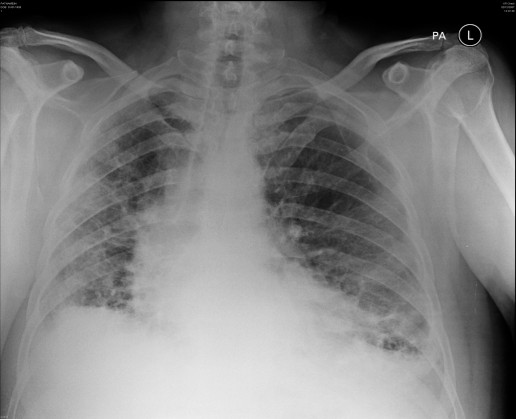
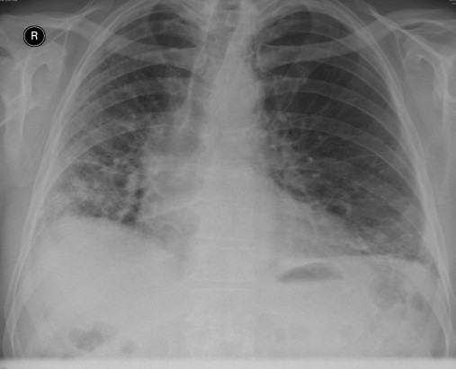
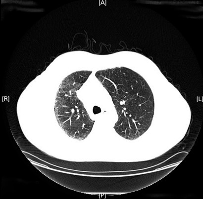
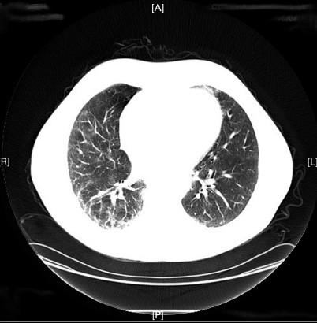
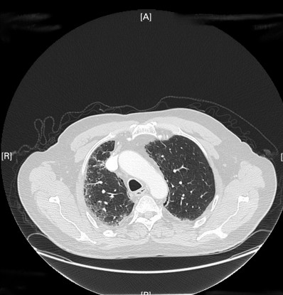
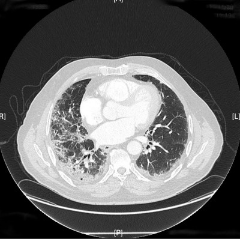
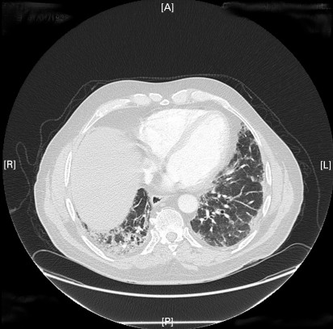
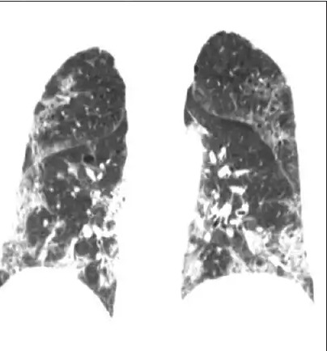
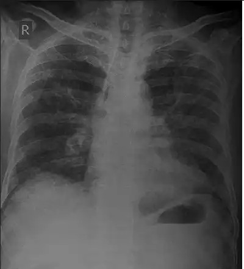
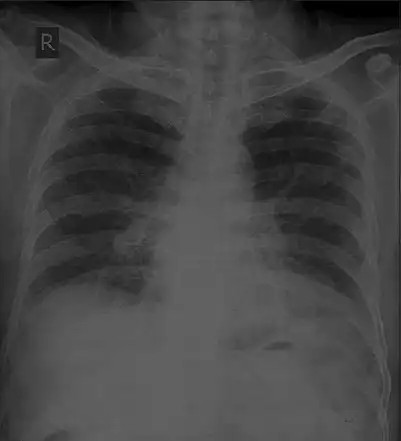

Neumotoxicidad en el paciente hematológico: cuatro casos, cuatro mecanismos, cuatro decisiones distintas.
Servicio de NeumologíaSesión clínica
Los dos ponentesCasos A y B
20 minutosDuración estimada
↓ Desliza para empezar · flechas ← → en modo presentación
Punto de partida
El fármaco es siempre un diagnóstico de exclusión
En un paciente inmunodeprimido con un infiltrado nuevo, la infección va primero. Pero descartarla no basta: hay que saber a qué toxicidad nos enfrentamos, porque el manejo cambia por completo.
01
Cronología
¿Cuántos días u horas desde la última dosis? Es el dato que más discrimina y el que peor recogemos.
02
Mecanismo
Daño oxidativo, hipersensibilidad, fuga capilar por citoquinas o desregulación inmune. Cada uno responde a un tratamiento distinto.
03
Consecuencia
Retirar, reducir, mantener o reintroducir. La respuesta no es la misma en los cuatro casos.
Cómo funciona la sesión: desliza a tu ritmo por cada caso. Los datos clínicos se animan al entrar en pantalla, las preguntas se corrigen solas al pulsar, y los bloques con «+» se abren al hacer clic.
Caso 1 · Bleomicina
Varón de 24 años, linfoma de Hodgkin
Estadio IIB, en tratamiento con ABVD. Consulta tres semanas después del quinto ciclo por tos seca y disnea de esfuerzo progresiva. Sin fiebre.
SpO₂ reposo
95 %
SpO₂ tras marcha
0 %
Crepitantes secos bibasales
PCR
6 mg/L
Procalcitonina normal
Galactomanano
Negativo
DLCO
0 %
Basal 91 % · patrón restrictivo leve
TC de tórax+
Opacidades reticulares y en vidrio deslustrado subpleurales, de predominio en bases, con engrosamiento septal. Sin nódulos ni signo del halo.

Al consultar

En el seguimiento
Decisión: ¿Qué hacéis con el esquema de tratamiento?
La toxicidad por bleomicina no se dosifica a la baja: se retira. La incidencia sube con la dosis acumulada, sobre todo por encima de 300–400 U, pero hay casos muy por debajo, así que ninguna cifra es «segura».
Galactomanano negativo, sin fiebre y patrón subpleural basal hacen improbable la aspergilosis. El antifúngico no debe retrasar la retirada.
Caso 1 · Mecanismo
Bleomicina
Caso 1 Daño oxidativo directo
Mecanismo: daño oxidativo directo. El pulmón carece de bleomicina hidrolasa: por eso es el órgano diana.
Latencia: semanas a meses; mediana en torno a 2–3 meses en Hodgkin, más precoz en tumores germinales.
Imagen: reticulación y vidrio deslustrado subpleural basal, con evolución posible a fibrosis. Formas menos frecuentes: neumonía organizada y neumonitis por hipersensibilidad.
Manejo: retirada definitiva. Corticoide (0,5–1 mg/kg) si hay síntomas o progresión, con descenso lento. Respuesta variable; la fibrosis establecida no revierte.
Prevención: en RATHL, omitir bleomicina tras un PET-TC negativo en el ciclo 2 redujo los eventos respiratorios graves sin perder supervivencia.
InteracciónFiO₂ elevada perioperatoria, radioterapia torácica previa, filtrado glomerular bajo (la eliminación es renal), G-CSF y cisplatino potencian el daño. [PENDIENTE]
Para vosotros: la DLCO cae más de un 10 % en la mayoría de los tratados con ABVD, y a los 5 años un tercio sigue por debajo del 75 %. Una caída aislada no diagnostica toxicidad, y ese antecedente explica muchas DLCO bajas que os llegan años después.
TC axial · antes de la toxicidad

Superior
Pendiente nivel medio

Inferior
TC axial · tras la toxicidad

Superior

Medio

Inferior
Respuesta múltiple: ¿cuáles aumentan el riesgo de toxicidad?
Marcad todas las que creáis y pulsad Comprobar.
Riesgo aumentado: edad >40, insuficiencia renal, radioterapia torácica y FiO₂ elevada. Añadid el tabaquismo y la propia dosis acumulada. El sexo y la esplenectomía no son factores establecidos.
El del filtrado glomerular es el que más se olvida: la bleomicina se elimina por vía renal y un aclaramiento bajo alarga la exposición pulmonar.
Caso 2 · Metotrexato
Mujer de 58 años, leucemia linfoblástica aguda
En mantenimiento: metotrexato oral semanal y mercaptopurina. Profilaxis con cotrimoxazol, cumplimiento verificado. A las 7 semanas: tos seca y disnea de dos semanas.
Temperatura
0 ºC
Febrícula
SpO₂
0 %
Eosinófilos
0/µL
LDH
Elevada
TC de tórax+
Vidrio deslustrado bilateral difuso, sin quistes ni neumotórax.
LBA celularidad
340.000/mL
LBA linfocitos
0 %
CD4/CD8 descendido
PCR Pneumocystis
Negativa
Galactomanano LBA negativo, cultivos estériles
Decisión: ¿qué apoya más la neumonitis por metotrexato frente a Pneumocystis?
La fiebre aparece en cerca de la mitad de las neumonitis por metotrexato y el vidrio deslustrado difuso es común a ambas: ninguno separa nada. La dosis acumulada es irrelevante, porque el mecanismo es de hipersensibilidad.
Inclina la balanza el conjunto: eosinofilia periférica, LBA linfocitario con CD4/CD8 bajo y profilaxis bien cumplida con PCR negativa.
Una imagen no las separa
Metotrexato a la izquierda, Pneumocystis a la derecha. Sin mirar la historia clínica, decidid cuál es cuál.

Metotrexato
Pendiente: TC o radiografía de Pneumocystis, misma escala y altura. Guardadla como images/caso2-pneumocystis.jpg
Pneumocystis
Vidrio deslustrado difuso en ambas, sin gradiente que las distinga. La respuesta está en la cronología, la profilaxis y el LBA, no en la imagen.
Caso 2 · Mecanismo
Metotrexato
Caso 2 Reacción de hipersensibilidad
Mecanismo: reacción de hipersensibilidad. Impredecible e independiente de la dosis: no hay umbral que vigilar.
Latencia: desde días hasta años, con la mayoría en el primer año de exposición.
Clínica: tos, disnea subaguda y fiebre en torno al 50 %. Eosinofilia periférica en una proporción relevante.
Imagen: vidrio deslustrado difuso, a veces con patrón de neumonitis por hipersensibilidad. Adenopatías mediastínicas ocasionales.
Manejo: retirada y corticoide, con buena respuesta habitual. La reintroducción no se recomienda: las recidivas descritas son más graves.
InteracciónCotrimoxazol: compite por la secreción tubular, sube el AUC del metotrexato y suma mielotoxicidad. Vigilar también AINE, IBP y probenecid, por el mismo mecanismo. [PENDIENTE]
La trampa: el metotrexato también produce edema pulmonar no cardiogénico, derrame pleural y neumonía organizada. Y coexiste con inmunosupresión real: la neumonitis no exime de completar el estudio microbiológico, solo de esperar a sus resultados para retirar el fármaco.
Evolución tras la retirada

Al ingreso

Tras retirada y corticoide
Resolución casi completa en pocas semanas, la evolución típica una vez retirado el fármaco. Fuente: [PENDIENTE]
Caso 3 · CAR-T
Varón de 55 años, día +3 tras CAR-T
Linfoma B difuso de célula grande refractario. Recibió axicabtagén ciloleucel hace tres días tras linfodepleción.
Temperatura
0 ºC
Desde el día +1
TA
82/48
Con noradrenalina
FR
0 rpm
SpO₂
0 %
Gafas nasales 4 L/min
Ferritina
0 ng/mL
PCR
0 mg/L
Fibrinógeno
Descendido
ICE
10/10
Exploración neurológica normal
Pruebas de imagen+
Infiltrados alveolointersticiales bilaterales difusos, líneas B en la ecografía y derrame pleural bilateral escaso.
Imagen del caso
Decisión: ¿cuál es el tratamiento dirigido de la insuficiencia respiratoria?
No es una neumonitis por fármaco: es fuga capilar dentro de un síndrome de liberación de citoquinas. Fiebre, hipotensión con vasopresor e hipoxemia con oxígeno de bajo flujo definen un SLC grado 3 en la escala ASTCT, que se gradúa por el peor de los dos parámetros.
El tocilizumab es la primera línea; el corticoide se añade si no hay respuesta o hay ICANS. La antibioterapia empírica es simultánea, nunca alternativa.
Caso 3 · Mecanismo
CAR-T
Caso 3 Fuga capilar por tormenta de citoquinas
Mecanismo: tormenta de citoquinas con IL-6 en el centro. El pulmón sufre por fuga capilar y edema, no por inflamación intersticial primaria.
Latencia: primeros 1–14 días. Muy precoz con axi-cel, algo más tardío con tisagenlecleucel.
Graduación: ASTCT: fiebre, hipotensión e hipoxemia. Manda el peor de los parámetros; las toxicidades de órgano no modifican el grado.
Manejo: tocilizumab desde el grado 2 y en cuanto haya vasopresor o necesidad significativa de oxígeno. Corticoide en refractariedad o si hay ICANS.
Después: citopenias prolongadas, hipogammaglobulinemia e infecciones tardías.
InteracciónLa IL-6 del síndrome de liberación de citoquinas inhibe los CYP hepáticos. Se acumulan voriconazol, tacrolimus y otros sustratos justo en la ventana de mayor uso. [PENDIENTE]
Lo que os va a llegar: el hipoxémico del día +3 baja a la UCI, no a Neumología. El que os consultan es el del día +60 con infiltrados y linfopenia profunda, y ahí el diferencial es infeccioso casi siempre. Distinguir las dos ventanas ahorra broncoscopias en la primera y las hace imprescindibles en la segunda.
Caso 4 · Checkpoint
Varón de 68 años, Hodgkin en recaída
Recaída tras autotrasplante y brentuximab. En tratamiento con nivolumab, doce dosis en cinco meses. Disnea de esfuerzo progresiva de dos semanas y tos seca.
SpO₂ reposo
93 %
Fiebre
Ausente
Estado funcional
Limitación instrumental
Aseo y vestido conservados
TC y LBA+
Vidrio deslustrado parcheado periférico con consolidaciones peribroncovasculares, sugestivo de patrón organizativo. Sin progresión ganglionar. LBA linfocitario, microbiología negativa.
Imagen del caso
Decisión: ¿cómo lo graduáis y qué hacéis?
Es sintomático y le limita las actividades instrumentales, pero conserva el autocuidado y no necesita oxígeno: grado 2. No es grado 1, que por definición es asintomático, solo radiológico.
Se suspende, se inicia prednisona 1 mg/kg/día y se desciende durante al menos 4–6 semanas. Si no mejora en 48–72 h se escala a infliximab, micofenolato o inmunoglobulinas, pero no de entrada.
Caso 4 · Mecanismo
Inhibidores de checkpoint
Caso 4 Autoinmunidad inducida
Mecanismo: desinhibición de la respuesta T. No es toxicidad directa, es autoinmunidad inducida.
Latencia: mediana de 2–3 meses, con rango de días a más de un año. Antes y más frecuente con combinaciones anti-PD-1 y anti-CTLA-4.
Imagen: el espectro más amplio de los cuatro: neumonía organizada, NINE, hipersensibilidad, formas parcheadas inespecíficas. Nada es patognomónico.
Grados 3–4: ingreso, metilprednisolona 1–2 mg/kg, suspensión definitiva y escalada si no hay mejoría en 48–72 h.
Reintroducción: posible tras grado 2 resuelto, con recidiva descrita hasta en un cuarto de los casos.
InteracciónRadioterapia torácica previa, con riesgo de radiation recall, y brentuximab previo, que ya consta en la historia de este paciente. [PENDIENTE]
Sesgo a evitar: en hematología muchos reciben checkpoint tras un trasplante autólogo o alogénico. Ahí compiten neumonía organizada, EICH pulmonar e infección oportunista, y la broncoscopia deja de ser opcional.
Cara a cara
Los cuatro, uno al lado del otro
Haz clic en cualquier fila para ampliar el detalle clínico.
Dominio
Bleomicina
Metotrexato
CAR-T
Checkpoint
Latencia
Semanas–meses
Días–años
Días +1–14
2–3 meses (mediana)
La latencia es el dato más rentable de toda la historia: en CAR-T una disnea el día +3 y otra el día +60 obligan a diferenciales completamente distintos, aunque el fármaco sea el mismo.
Patrón dominante
Reticular subpleural basal, tendencia a fibrosis
Vidrio deslustrado difuso; LBA linfocitario
Edema por fuga capilar, derrame
Organizativo, NINE, hipersensibilidad
Ninguno tiene un hallazgo patognomónico. El diagnóstico se sostiene en la cronología, la exclusión y la respuesta a la retirada — no en la imagen aislada.
Tratamiento
Retirada; corticoide si hay síntomas
Retirada y corticoide, buena respuesta
Tocilizumab primero; corticoide si refractario
Corticoide según grado; escalada a 2–3 días
Retirar el fármaco es el tratamiento en tres de los cuatro casos. En CAR-T no hay fármaco que retirar: el objetivo es frenar la citoquina, no el producto celular.
¿Reintroducir?
No
No recomendada
No procede (dosis única)
Sí tras grado 2 resuelto
El checkpoint es el único de los cuatro donde la reintroducción es una opción real — con una recidiva descrita hasta en uno de cada cuatro pacientes, así que la decisión se individualiza.
Para llevarse a la guardia
Ocho ideas, clic para el reverso
01
Infección hasta demostrar lo contrario
Toda opacidad nueva en un paciente hematológico es infección hasta que se demuestre lo contrario. El fármaco se diagnostica por exclusión, no por sospecha.
02
La cronología es el dato más rentable
Cuántos días u horas desde la última dosis: es lo que más discrimina y lo que más falta en la interconsulta.
03
El LBA rara vez diagnostica, casi siempre cambia el manejo
Casi nunca confirma la neumotoxicidad, pero descarta lo que sí tiene tratamiento propio — y eso ya cambia la decisión.
04
Retirar el fármaco es el tratamiento
El corticoide es el complemento. En el síndrome de liberación de citoquinas, ni siquiera es lo primero.
05
Bleomicina: se retira, no se reduce
No hay dosis «segura». La incidencia sube con la dosis acumulada, pero hay casos muy por debajo de cualquier umbral.
06
En el SLC, antibiótico y tocilizumab van juntos
La antibioterapia empírica es simultánea al tocilizumab, nunca una alternativa a esperar mientras se decide.
07
Checkpoint: la limitación instrumental ya es grado 2
El grado 1 es, por definición, asintomático. Si limita las actividades instrumentales aunque conserve el autocuidado, ya es grado 2.
08
Metotrexato no se reintroduce
Las recidivas descritas tras reintroducir son más graves que el episodio inicial.
Bibliografía
Referencias
Las tarjetas de interacción farmacológica llevan marcadores [PENDIENTE] — faltan por localizar y añadir aquí antes de la sesión.
Assessment of fitness for bleomycin use and management of bleomycin pulmonary toxicity in patients with classical Hodgkin lymphoma: a British Society for Haematology Good Practice Paper. Br J Haematol. 2024.
Johnson P, et al. Adapted treatment guided by interim PET-CT scan in advanced Hodgkin's lymphoma (RATHL). N Engl J Med. 2016;374:2419–29.
Lee DW, et al. ASTCT consensus grading for cytokine release syndrome and neurologic toxicity associated with immune effector cells. Biol Blood Marrow Transplant. 2019;25:625–38.
Schneider BJ, et al. Management of immune-related adverse events in patients treated with immune checkpoint inhibitor therapy: ASCO guideline update. J Clin Oncol. 2021;39:4073–126.
Haanen J, et al. Management of toxicities from immunotherapy: ESMO Clinical Practice Guideline. Ann Oncol. 2022;33:1217–38.